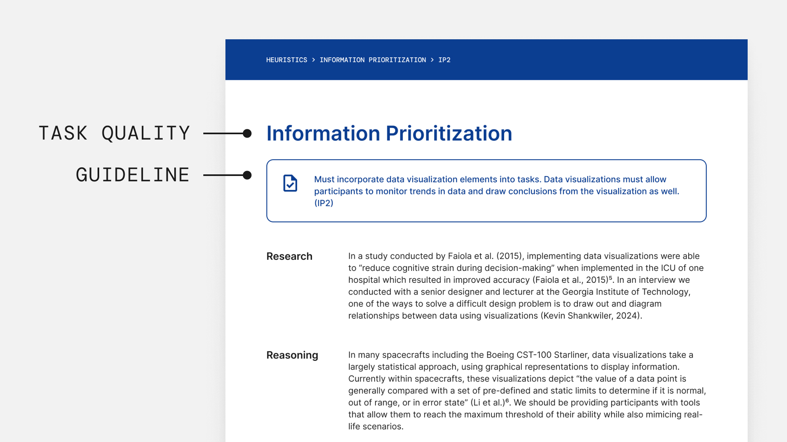

research > key components > guidelines
Guidelines
Operationalizations of the task qualities that help researchers build tasks in greater detail
What are Guidelines?
Guidelines help define task qualities.

Where guides are located in relation to task qualities in the M.A.S.T. document
One example of guidelines would the following for Information Prioritization:
Tasks must incorporate data visualization elements. Data visualizations must allow participants to monitor trends in data and draw conclusions from the visualization as well.
In our interviews with HRP researchers, they all emphasized the importance of being able to back your claims with empirical research and reasoning. This guideline shouldn't be presented in isolation. Guidelines should be fueled by research.
List of Guidelines
Here is a list of all the guidelines in the M.A.S.T. document. For more research backing, please check out our M.A.S.T. document here ↗.
| Task Quality |
Guidelines |
| Information Prioritization |
- Tasks will provide one participant with no more than 5–9 chunks of information at any given time.
- Tasks must incorporate data visualization elements. Data visualizations must allow participants to monitor trends in data and draw conclusions from the visualization as well.
- Tasks will introduce problems of varying degrees of risk. The higher the likelihood of fatality, the greater the risk posed.
|
| Cascading Problems |
- Each cascading problem will have a minimum of two levels of complexity.
- The effects of cascading problems in the task will be both anticipated and unanticipated.
- Some effects of cascading problems will be immediate, while others may not manifest until later stages.
|
| Multiple Stressors |
- Tasks will incorporate both time and situational stressors using different modalities.
|
| Induces Creative and Systematic Thinking |
- According to the Consensual Assessment Technique (CAT), the task must have an average creativity score of 4 or above (out of a high score of 7).
- According to our definition of systematic thinking, tasks should extend beyond one-to-one problem relationships. They should facilitate system-wide thinking, demonstrating how various parts are interconnected and allowing for multiple solutions to the problem.
|
| Built for Teams |
- Tasks must be multiplayer.
- Participants are initially assigned predefined roles with specific responsibilities, but during the tasks, they are free to partake in work related to another participants roles.
|